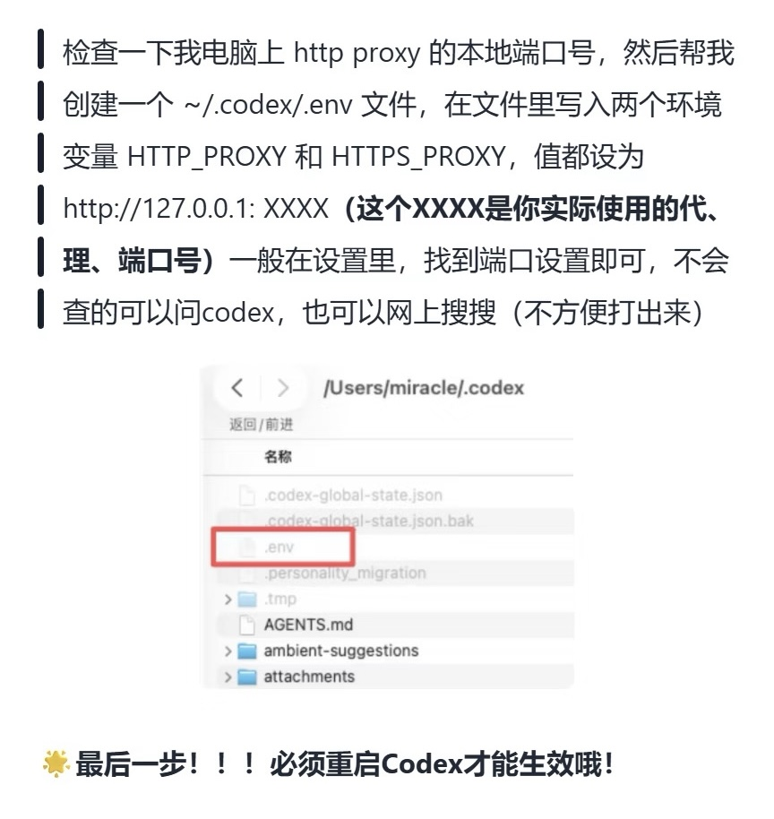

ChatGPT苹果充值与codeX登录（踩坑解疑）
1 背景说明
继Claude被封后，终于开始探索GPT。结果由于前期瞎搞，AppleID、google、ChatGPT、codex账号用的非常乱，导致充值、登录、使用遇到很多问题。本文主要讲一下遇到的一些坑，每一步的详细教程附上了我参考的链接，大家自行点击查看。
前情说明：本人没有国外电话卡与支付方式。如果你有以上两个，那么恭喜你，失去了阅读本文的价值🤭
ps. 默认读者们会魔法的哈🔮（pc端有，iPhone上还没有的，到自己订阅的网站上找找对应的教程）
2 我的环境
系统：macOS Sequoia 15.7.3
浏览器：Chrome
支付方式：支付宝（Apple 礼品卡）
账号：ChatGPT Plus
ChatGPT：Chrome 登录
3 整个流程
3.1 注册GPT账号
谷歌浏览器使用的是qq邮箱注册登录的，后来换了个gmail。
网页端ChatGPT直接使用谷歌登录，由于我的网页端很久以前就登录了，所以这里没有遇到验证电话号码的问题。如果这里有遇到验证电话号码 还请自行搜索解决方案🤓
3.2 充值支付
这里全部都在手机上完成。
3.2.1 注册美区AppleID
第一步：切换手机地区
iphone设置 ——> 通用 ——> 语言与地区 ——> 地区 ——> 选择“美国”
这里选择美国后，会重启iPhone
第二步：Apple官网注册ID
按照步骤注册即可，不过注意地区要选择“美国”，地址网上找个地址生成器生成一个即可，把必填的填了，选填的不填（尽量少填），这些信息记得自己保存一份，以备以后有用
（这时候如果apple官网一直打不开，那就要使用魔法了）
3.2.2 下载手机端ChatGPT
app store里先退出原本的账号，然后使用新注册的美区id登录。现在，就可以搜索到并下载Chatgpt了。下载后，登录跟电脑同一个GPT账号。
3.2.3 GPT充值
我使用的是支付宝礼品卡，跟的以下这篇教程：
无痛get GPT 无需visa/mastercard 1. 在苹果官网注册... http://xhslink.com/o/AT7ocncDVWT 前往【小红书】一探究竟吧！
- 将支付宝首页左上角的地区改为“旧金山”
- 在“更多”里的“境外服务”找到“礼品卡”
- 找到“Apple”
- 点击“Apple”后，输入充值金额即可（plus：20 dollar ； pro：100/200 dollar），完成充值后会给你一个兑换码
- 打开app store，点击右上角头像，找到兑换充值卡或代码，输入兑换码，就将刚刚的金额冲到AppleID里啦
- 打开gpt升级plus的地方，付款自动从这个苹果id账号扣款。
到这里，GPT就成功升级了
3.3 codeX下载与登录
正常流程就是在官网下载codex，然后使用GPT登录。但是，由于我的codex之前接过其他的api 以及一些其他乱七八糟的原因，所以这里非常不顺利，后面就讲讲我遇到的问题、尝试过的方法和最终方案。
4 所有踩坑
首先注意一点，没有充值的GPT是用不了codex的。白嫖失败😅
4.1 codex登录时验证电话号码
没有外面的手机号真的很痛苦啊😣
跟着一个b站的视频，不用手机号，完成了ChatGPT账号登录codex。他使用的是一个Chrome插件，自动获取你网页版GPT的账号信息，生成auth.json，然后你手动将这个json文件加入codex应用系统配置里，即可完成登录。（视频链接在后面）
问题：
使用这种方法登录后，codex显示“Your access token could not be refreshed. Please log out and sign in again.”无法使用你的GPT余额
【全程无广！教你如何彻底解决codex验证手机号问题！】https://www.bilibili.com/video/BV16sNj6ZEPv?vd_source=06cf6463373983dbe141af20e7628533
4.2 “Your access token could not be refreshed. Please log out and sign in again.”
采用的是上面那个视频评论区里“四元三色”发的一个方法：
“这个是因为最新版的有更多验证时效性的，但不要慌，首先你网页版是能用的，有个登录方式叫临时码验证，为一些无头端准备的，如下两步：
第一步，去命令行里codex logout登出（如果你本来就没登那就不用管这一步）；
第二步，命令行里输入codex login --device-auth登录，会有两个选项，第一个是打开浏览器也就是会要求手机的那种，第二个就是临时码登录，会给你一串编码，格式应该是XXXX-XXXXX九个数字，在auth.openai.com/codex/device按指示操作，填入就登上了。注意，命令行里可能因为字符编码问题产生一些乱码，或者你实在不知道设备码怎么弄的，把输入codex login --device-auth后弹出的一大段直接复制下来问AI，AI会教你的。”
🍎 注意，这个方式使用了codex cli版，需要先在终端进行安装。否则，会出现 zsh: command not found: codex
- 检查node、npm是否存在
node -v
npm -v
不存在就用brew装node
brew install node
- 全局安装codex cli
npm install -g @openai/codex
- 修复PATH （解决command not found）
npm 全局工具默认路径没加入 zsh 环境变量：
npm prefix -g#获取npm全局目录
echo 'export PATH="$(npm prefix -g)/bin:$PATH"' >> ~/.zshrc #将bin目录写入zsh配置
source ~/.zshrc #重载终端配置，立刻生效
hash -r #清空zsh命令缓存
- 验证是否可用
which codex #查看命令路径
codex --version #输出版本号即成功
- 执行你原本的登录命令（无报错后再跑）
codex login --device-auth
4.3 对话时五次重新连接
{kind=link}

端口号在clash的设置页面可以查看，一般是7890
.env内容：
# 示例（替换成你的代理地址端口）
HTTP_PROXY=http://127.0.0.1:xxxx
HTTPS_PROXY=http://127.0.0.1:xxxx
ALL_PROXY=socks5://127.0.0.1:xxxx
NO_PROXY=localhost,127.0.0.1